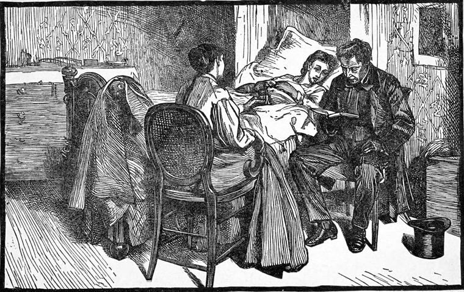

One evening Lucy was sitting as usual with Mattie, for the child had no friends but her and grannie; her only near relative was a widowed sister of her father, whom she did not like. She was scarcely so well as she had been for the last few days, and had therefore gone early to bed, and Lucy sat beside her to comfort her. By this time she had got the room quite transformed in appearance—all the books out of it, a nice clean paper up on the walls, a few colored prints from the Illustrated London News here and there, and, in fact, the whole made fit for the abode of a delicate and sensitive child.
"What shall I read to-night, Mattie?" she asked. For Mattie must always have something read to her out of the New Testament before she went to sleep; Mr. Spelt had inaugurated the custom.
"Oh, read about the man that sat in his Sunday clothes," said Mattie.
"I don't know that story," returned Lucy.
"I wish dear mother was here," said Mattie, with the pettishness of an invalid. "He would know what story I mean—that he would."
"Would you like to see Mr. Spelt?" suggested Lucy. "He was asking about you not an hour ago."
"Why didn't he come up, then? I wonder he never comes to see me."
"I was afraid you weren't strong enough for it, Mattie. But I will run and fetch him now, if he's not gone."
"Oh, yes; do, please. I know he's not gone, for I have not heard his step yet. I always watch him out of the court when I'm in bed. He goes right under me."
Lucy went, and Mr. Spelt came gladly.
"Well, mother," said Mattie, holding out a worn little cloud of a hand, "how do you do?"
Mr. Spelt could hardly answer for emotion. He took the little hand in his, and it seemed to melt away in his grasp, till he could hardly feel it.
"Don't cry, mother. I am very happy. I do believe I've seen the last of old Syne. I feel just like the man that had got his Sunday clothes on, you know. You see what a pretty room Miss Burton has made, instead of all those ugly books that Syne was so fond of: well, my poor head feels just like this room, and I'm ready to listen to anything about Somebody. Read about the man in his Sunday clothes."
But Mr. Spelt, no less than Lucy, was puzzled as to what the child meant.
"I wish that good clergyman that talked about Somebody's burden being easy to carry, would come and see me," she said. "I know he would tell me the story. He knows all about Somebody."
"Shall I ask Mr. Potter to come and see you?" said Spelt, who had never heard of Mr. Fuller by name, or indeed anything about him, but what Mattie had told him before she was taken ill.
"I don't mean Mr. Potter—you know well enough. He's always pottering," said the child, with a laugh.
She had not yet learned to give honor where honor is not due; or, rather, she had never been young enough to take seeming for being, or place for character. The consequence was that her manners and her modesty had suffered—not her reverence or her heart.

"I want to see the gentleman that really thinks it's all about something," she resumed. "Do you know where he lives, Miss Burton?"
"No," answered Lucy, "but I will find out to-morrow, and ask him to come and see you."
"Well, that will be nice," returned Mattie. "Read to me, Mr. Spelt—anything you like."
The little tailor was very shy of reading before Lucy, but Mattie would hear of nothing else, for she would neither allow Lucy to read, nor yet to go away.
"Don't mind me, Mr. Spelt," said Lucy, beseechingly. "We are all friends, you know. If we belong to the Somebody Mattie speaks about we needn't be shy of each other."
Thus encouraged, Mr. Spelt could refuse no longer. He read about the daughter of Jairus being made alive again.
"Oh, dear me!" said Mattie. "And if I had gone dead when Syne was tormenting of me, He could have come into the room, and taken me by the hand and said, 'Daughter, get up.' How strange it would be if He said, 'Daughter' to me, for then He would be my father, you know. And they say He's a king. I wonder if that's why Mr. Kitely calls me princess. To have Mr. Kitely and Somebody," she went on musingly, "both for fathers is more than I can understand. There's something about godfathers and godmothers in the Catechism, ain't there, Miss Burton?" Then, without, waiting for a reply, she went on, "I wish my father would go and hear what that nice gentleman—not Mr. Potter—has got to say about it. Miss Burton, read the hymn about blind Bartimeus, and that'll do mother good, and then I'll go to sleep."
The next day, after she came from the Morgensterns', Lucy went to find Mr. Fuller. She had been to the week-evening service twice since Mattie began to recover, but she had no idea where Mr. Fuller lived, and the only way she could think of for finding him was to ask at the warehouses about the church. She tried one after another, but nobody even knew that there was any service there—not to say where the evening preacher lived. With its closed, tomb-like doors, and the utter ignorance of its concerns manifested by the people of the neighborhood, the great ugly building stood like some mausoleum built in honor of a custom buried beneath it, a monument of the time when men could buy and sell and worship God. So Lucy put off further inquiry till the next week-evening service, for she had found already that Mr. Fuller had nothing to do with the Sunday services in that church.
How she wished that she could take Thomas with her the next time she went to receive Mr. Fuller's teaching! She had seen very little of Thomas, as I have said, and had been so much occupied with Mattie, that she did not even know whether he had fulfilled his promise about telling his father. I suspect, however, that she had been afraid to ask him, foreboding the truth that he had in fact let his promise lapse in time, and was yet no nearer toward its half redemption in act, which was all that remained possible now. And, alas! what likelihood was there of the good seed taking good root in a heart where there was so little earth?
Finding Mr. Kitely in his shop door, Lucy stopped to ask after Mattie, for she had not seen her that morning. And then she told him what she had been about, and her want of success.
"What does the child want a clergyman for?" asked Mr. Kitely, with some tone of dissatisfaction. "I'm sure you're better than the whole lot of them, miss. Now I could listen to you—"
"How do you know that?" retorted Lucy, smiling; for she wanted to stop the eulogium upon herself.
"Because I've listened to you outside the door, Miss Burton, when you was a-talking to Mattie inside."
"That wasn't fair, Mr. Kitely."
"No more it wasn't, but it's done me no harm, nor you neither. But for them parsons!—they're neither men nor women. I beg their pardons—they are old wives."
"But are you sure that you know quite what you are talking about? I think there must be all sorts of them as well as of other people. I wish you would come and hear Mr. Fuller some evening with Mattie and me when she's better. You would allow that he talks sense, anyhow."
"I ain't over hopeful, miss. And to tell the truth, I don't much care. I don't think there can be much in it. It's all an affair of the priests. To get the upper hand of people they work on their fears and their superstitions. But I don't doubt some of them may succeed in taking themselves in, and so go on like the fox that had lost his tail, trying to make others cut off theirs too."
Lucy, did not reply, because she had nothing at hand to say. The bookseller feared he had hurt her.
"And so you couldn't find this Mr. Fuller? Well, you leave it to me. I'll find him, and let you know in the afternoon."
"Thank you, Mr. Kitely. Just tell Mattie, will you? I must run home now, but I'll come in in the afternoon to hear how you have succeeded."
About six o'clock, Lucy reëntered Mr. Kitely's shop, received the necessary directions to find the "parson," ran up to tell Mattie that she was going, for the child had not come down stairs, and then set out.
To succeed she had to attend to Mr. Kitely's rather minute instructions; for although the parsonage lay upon the bank of one of the main torrents of city traffic, it was withdrawn and hidden behind shops and among offices, taverns, and warehouses. After missing the most direct way, she arrived at last, through lanes and courts, much to her surprise, at the border of a green lawn on the opposite side of which rose a tree that spread fair branches across a blue sky filled with pearly light, and blotted here and there with spongy clouds that had filled themselves as full of light as they could hold. The other half of the branches of the same tree spread themselves across the inside of a gable, all that remained of a tavern that was being pulled down. The gable was variegated with the incongruous papers of many small rooms, and marked with the courses of stairs and the holes for the joints of the floors; and this dreariness was the background for the leaves of the solitary tree. On the same side was the parsonage, a long, rather low, and country-looking house, from the door of which Lucy would not have been surprised to see a troop of children burst with shouts and laughter, to tumble each other about upon the lawn, as smooth, at least, if not as green, as any of the most velvety of its kind. One side of the square was formed by a vague, commonplace mass of dirty and expressionless London houses—what they might be used for no one could tell—one of them, probably, an eating-house—mere walls with holes to let in the little light that was to be had. The other side was of much the same character, only a little better; and the remaining side was formed by the long barn-like wall of the church, broken at regular intervals by the ugly windows, with their straight sides filled with parallelograms, and their half-circle heads filled with trapeziums—the ugliest window that can be made, except it be redeemed with stained glass, the window that makes the whole grand stretch of St. Paul's absolutely a pain. The church was built of brick, nearly black below, but retaining in the upper part of the square tower something of its original red. All this Lucy took in at a glance as she went up to the door of the parsonage.
She was shown into a small study, where Mr. Fuller sat. She told him her name, that she had been to his week-evening service with Mattie, and that the child was ill and wanted to see him.
"Thank you very much," said Mr. Fuller. "Some of the city clergymen have so little opportunity of being useful! I am truly grateful to you for coming to me. A child in my parish is quite a godsend to me—I do not use the word irreverently—I mean it. You lighten my labor by the news. Perhaps I ought to say I am sorry she is ill. I dare say I shall be sorry when I see her. But meantime, I am very glad to be useful."
He promised to call the next day; and, after a little more talk, Lucy took her leave.
Mr. Fuller was a middle-aged man, who all his conscious years had been trying to get nearer to his brethren, moved thereto by the love he bore to the Father. The more anxious he was to come near to God, the more he felt that the high-road to God lay through the forest of humanity. And he had learned that love is not a feeling to be called up at will in the heart, but the reward as the result of an active exercise of the privileges of a neighbor.
Like the poor parson loved of Chaucer, "he waited after no pomp ne reverence;" and there was no chance of preferment coming in search of him. He was only a curate still. But the incumbent of St. Amos, an old man, with a grown-up family, almost unfit for duty, and greatly preferring his little estate in Kent to the city parsonage, left everything to him, with much the same confidence he would have had if Mr. Fuller had been exactly the opposite of what he was, paying him enough to live upon—indeed, paying him well for a curate. It was not enough to marry upon, as the phrase is, but Mr. Fuller did not mind that, for the only lady he had loved, or ever would love in that way, was dead; and all his thoughts for this life were bent upon such realizing of divine theory about human beings, and their relation to God and to each other, as might make life a truth and a gladness. It was therefore painful to him to think that he was but a city curate, a being whose thirst after the relations of his calling among his fellows reminded himself of that of the becalmed mariner, with "water, water everywhere, but water none to drink." He seemed to have nothing to do with them, nor they with him. Perhaps not one individual of the crowds that passed his church every hour in the week would be within miles of it on the Sunday; for even of those few who resided near it, most forsook the place on the day of rest, especially in the summer; and few indeed were the souls to whom he could offer the bread of life. He seemed to himself to be greatly overpaid for the work he had it in his power to do—in his own parish, that is. He had not even any poor to minister to. He made up for this by doing his best to help the clergyman of a neighboring parish, who had none but poor; but his heart at times burned within him to speak the words he loved best to speak to such as he could hope had the ears to hear them; for among the twelve people—a congregation he did not always have—that he said he preferred to the thousand, he could sometimes hardly believe that there was one who heard and understood. More of his reflections and resolutions, in regard to this state of affairs, we shall fall in with by and by. Meantime, my reader will believe that this visit of Lucy gave him pleasure and hope of usefulness. The next morning he was in Mr. Kitely's shop as early as he thought the little invalid would be able to see him.
"Good-morning, sir," said Mr. Kitely, brusquely. "What can I do for you this morning?"
If Mr. Fuller had begun looking at his books, Kitely would have taken no notice of him. He might have stayed hours, and the bookseller would never have even put a book in his way; but he looked as if he wanted something in particular, and therefore Mr. Kitely spoke.
"You have a little girl that's not well, haven't you?" returned Mr. Fuller.
"Oh! you're the gentleman she wanted to see. She's been asking ever so often whether you wasn't come yet. She's quite impatient to see you, poor lamb!"
While he spoke, Kitely had drawn nearer to the curate, regarding him with projecting and slightly flushed face, and eyes that had even something of eagerness in them.
"I would have come earlier, only I thought it would be better not," said Mr. Fuller.
Mr. Kitely drew yet a step nearer, with the same expression on his face.
"You won't put any nonsense into her head, will you, sir?" he said, almost pleadingly.
"Not if I know it," answered Mr. Fuller, with a smile of kind humor. "I would rather take some out of it."
"For you see," Kitely went on, "that child never committed a sin in her life. It's all nonsense; and I won't have her talked to as if she was a little hell-cat."
"But you see we must go partly by what she thinks herself; and I suspect she won't say she never did anything wrong. I don't think I ever knew a child that would. But, after all, suppose you are right, and she never did anything, wrong—"
"I don't exactly say that, you know," interposed Mr. Kitely, in a tone of mingled candor and defense. "I only said she hadn't committed any sins."
"And where's the difference?" asked Mr. Fuller, quietly.
"Oh! you know quite well. Doing wrong, you know—why, we all do wrong sometimes. But to commit a sin, you know—I suppose that's something serious. That comes in the way of the Ten Commandments."
"I don't think your little girl would know the difference."
"But what's the use of referring to her always?"
"Just because I think she's very likely to know best. Children are wise in the affairs of their own kingdom."
"Well, I believe you're right; for she is the strangest child I ever saw. She knows more than any one would think for. Walk this way, sir. You'll find her in the back room."
"Won't you come, too, and see that I don't put any nonsense into her head?"
"I must mind the shop, sir," objected Kitely, seeming a little ashamed of what he had said.
Mr. Fuller nodded content, and was passing on, when he bethought himself, and stopped.
"Oh, Mr. Kitely," he said, "there was just one thing I was going to say, but omitted. It was only this: that suppose you were right about your little girl, or suppose even that she had never done anything wrong at all, she would want God all the same. And we must help each other to find Him."
If Mr. Kitely had any reply ready for this remark, which I doubt, Mr. Fuller did not give him time to make it, for he walked at once into the room, and found Mattie sitting alone in a half twilight, for the day was cloudy. Even the birds were oppressed, for not one of them was singing. A thrush hopped drearily about under his load of speckles, and a rose-ringed paroquet, with a very red nose, looked ashamed of the quantity of port-wine he had drunk. The child was reading the same little old book mentioned before. She laid it down, and rose from the window-sill to meet Mr. Fuller.
"Well, how do you do, sir?" she said. "I am glad you are come."
Any other child of her age Mr. Fuller would have kissed, but there was something about Mattie that made him feel it an unfit proceeding. He shook hands with her and offered her a white camellia.
"Thank you, sir," said Mattie, and laid the little transfiguration upon the table.
"Don't you like flowers?" asked Mr. Fuller, somewhat disappointed. "Isn't it beautiful now?"
"Well, where's the good?" answered and asked Mattie, as if she had been a Scotchwoman. "It will be ugly before to-morrow."
"Oh, no; not if you put it in water directly."
"Will it live forever, then?" asked Mattie.
"No, only a few days."
"Well, where's the odds, then? To-morrow or next week—where's the difference? It looks dead now when you know it's dying."
"Ah!" thought Mr. Fuller, "I've got something here worth looking into." What he said was, "You dear child!"
"You don't know me yet," returned Mattie. "I'm not dear at all. I'm cross and ill-natured. And I won't be petted."
"You like the birds, though, don't you?" said Mr. Fuller.
"Well, yes. Mr. Kitely likes them, and I always like what he likes. But they are not quite comfortable, you know. They won't last forever, you know. One of them is dead since I was taken ill. And father meant it for Miss Burton."
"Do you like Miss Burton, then?"
"Yes, I do. But she'll live forever, you know. I'll tell you something else I like."
"What is that, my child?"
"Oh, I'm no such a child! But I'll tell you what I like. There."
And she held out the aged little volume, open at the hymn about blind Bartimeus.
"Will this live forever, then?" he asked, turning the volume over in his hand, so that its withered condition suggested itself at once to Mattie.
"Now you puzzle me," answered Mattie. "But let me think. You know it's not the book I mean; it's the poem. Now I have it. If I know that poem by heart, and I live forever, then the poem will live forever. There!"
"Then the book's the body, and the poem the soul," said Mr. Fuller.
"One of the souls; for some things have many souls. I have two, at least."
Mr. Fuller felt instinctively, with the big forehead and the tiny body of the child before him, that they were getting on rather dangerous ground. But he must answer.
"Two souls! That must be something like what King David felt, when he asked God to join his heart into one. But do you like this poem?" he hastened to add. "May I read it to you?"
"Oh, yes; please do. I am never tired of hearing it. It will sound quite new if you read it."
So Mr. Fuller read slowly—"As Jesus went into Jericho town." And from the way Mattie listened, he knew what he must bring her next—not a camellia, but a poem. Still, how sad it was that a little child should not love flowers!
"When were you in the country last, Miss Kitely?"
"I never was in the country that I know of. My name is Mattie."
"Wouldn't you like to go, Mattie?"
"No I shouldn't—not at all."
"Why?"
"Well, because—because it's not in my way, you see."
"But surely you have some reason for not liking the country."
"Well, now, I will tell you. The country, by all I can hear, is full of things that die, and I don't like that. And I think people can't be nice that like the country."
Mr. Fuller resolved in his heart that he would make Mattie like the country before he had done with her. But he would say no more now, because he was not sure whether Mattie as yet regarded him with a friendly eye; and he must be a friend before he could speak about religion. He rose, therefore, and held out his hand.
Mattie looked at him with dismay.
"But I wanted you to tell me about the man that sat at Somebody's feet in his Sunday clothes."
Happily for his further influence with her, Mr. Fuller guessed at once whom she meant, and taking a New Testament from his pocket, read to her about the demoniac, who sat at the feet of Jesus, clothed, and in his right mind. He had not known her long before he discovered that all these stories of possession had an especial attraction for Mattie—she evidently associated them with her own visions of Syne and his men.
"Well, I was wrong. It wasn't his Sunday clothes," she said. "Or, perhaps, it was, and he had torn the rest all to pieces."
"Yes; I think that's very likely," responded Mr. Fuller.
"I know—it was Syne that told him, and he did it. But he wouldn't do it any more, would he, after he saw Somebody?"
"I don't think he would," answered Mr. Fuller, understanding her just enough to know the right answer to make. "But I will come and see you again to-morrow," he added, "and try whether I can't bring something with me that you will like."
"Thank you," answered the old-fashioned creature. "But don't be putting yourself to any expense about it, for I am not easy to please." And she lifted her hand to her head and gave a deep sigh, as if it was a very sad fact indeed. "I wish I was easier to please," she added, to herself; but Mr. Fuller heard her as he left the room.
"She's a very remarkable child that, Mr. Kitely—too much so, I fear," he said, reëntering the shop.
"I know that," returned the bookseller, curtly, almost angrily. "I wish she wasn't."
"I beg your pardon. I only wanted—"
"No occasion at all," interrupted Mr. Kitely.
"I only wanted," Mr. Fuller persisted, "to ask you whether you do not think she had better go out of town for a while."
"I dare say. But how am I to send her? The child has not a relation but me—and an aunt that she can't a-bear; and that wouldn't do—would it, sir? She would fret herself to death without someone she cared about."
"Certainly it wouldn't do. But mightn't Miss—I forget her name—"
"Miss Burton, I dare say you mean."
"I mean Miss Burton. Couldn't she help you? Is she any relation of yours?"
"None whatever. Nor she's not like it. I believe she's a stray, myself."
"What do you mean, Mr. Kitely?" asked Mr. Fuller, quite bewildered now.
"Well, sir, I mean that she's a stray angel," answered Mr. Kitely, smiling; "for she ain't like anyone else I know of but that child's mother, and she's gone back to where she came from—many's the long year."
"I don't wonder at your thinking that of her if she's as good as she looks," returned Mr. Fuller. And bidding the bookseller good-morning, he left the shop and walked home, cogitating how the child could be got into the country.
Next morning he called—earlier, and saw Lucy leaving the court just as he was going into the shop. He turned and spoke to her.
"Fancy a child, Miss Burton," he said, "that does not care about flowers—and her heart full of religion too! How is she to consider the lilies of the field? She knows only birds in cages; she has no idea of the birds of the air. The poor child has to lift everything out of that deep soul of hers, and the buckets of her brain can't stand such hard work."
"I know, I know," answered Lucy. "But what can I do?"
"Besides," Mr. Fuller continued, "what notion of the simple grandeur of God can she have when she never had more than a peep of the sky from between these wretched houses? How can the heavens declare the glory of God to her? You don't suppose David understood astronomy, and that it was from a scientific point of view that he spoke, when he said that the firmament showed his handiwork? That was all he could say about it, for the Jewish nation was not yet able to produce a Ruskin. But it was, nevertheless, the spiritual power of the sky upon his soul—not the stars in their courses, but the stars up there in their reposeful depth of blue, their 'shining nest'—which, whatever theory of their construction he might have, yet impressed him with an awe, an infinitude, a shrinking and yet aspiring—made his heart swell within him, and sent him down on his knees. This little darling knows nothing of such an experience. We must get her into the open. She must love the wind that bloweth where it listeth, and the clouds that change and pass. She can't even like anything that does not last forever; and the mind needs a perishing bread sometimes as well as the body—though it never perishes when once made use of, as Mattie told me yesterday. But I beg your pardon; I am preaching a sermon, I think. What a thing it is to have the faults of a profession in addition to those of humanity! It all comes to this—you must get that child, with her big head and her big conscience, out of London, and give her heart a chance."
"Indeed, I wish I could," answered Lucy. "I will do what I can, and let you know. Are you going to see her now, Mr. Fuller?"
"Yes, I am. I took her a flower yesterday, but I have brought her a poem to-day. I am afraid, however, that it is not quite the thing for her. I thought I could easily find her one till I began to try, and then I found it very difficult indeed."
They parted—Lucy to Mrs. Morgenstern's, Mr. Fuller to Mattie.
I will give the hymn—for the sake, in part, of what Mattie said, and then I will close the chapter.
But how? I am not good;
No thankful song my heart will raise,
Nor even wish it could.
Nor able not to sin;
The weary strife would ever last
If once I should begin.
No action to repent?
Is all around so very fair?
Is thy heart quite content?
No labor to endure?
Then go in peace, for thou art whole,
Thou needest not His cure.
I have a nameless grief,
A faint, sad pain—but such that I
Can look for no relief.
Come in thyself distrest;
To come to Jesus is thy part,
His part to give thee rest.
Thy grief and pain to quell;
Into thy heart Himself will go,
And that will make thee well.
When Mr. Fuller had finished the hymn, he closed the book and looked toward Mattie. She responded—with a sigh—
"Well, I think I know what it means. You see I have such a big head, and so many things come and go just as they please, that if it weren't for Somebody I don't know what I should do with them all. But as soon as I think about Him, they grow quieter and behave better. But I don't know all that it means. Will you lend me the book, Mr. Fuller?"
All the child's thoughts took shapes, and so she talked like a lunatic. Still, as all the forms to which she gave an objective existence were the embodiments of spiritual realities, she could not be said to have yet passed the narrow line that divides the poet from the maniac. But it was high time that the subjects of her thoughts should be supplied from without, and that the generating power should lie dormant for a while. And the opportunity for this arrived sooner than her friends had expected.